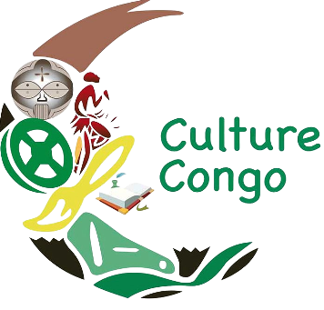

La république du Congo, par la disposition même de son territoire, possède une grande variété de cultures, des savanes de la plaine du Niari aux forêts inondées du Nord, de l'immense fleuve Congo aux montagnes escarpées et forestières du Mayombe et aux 170 km de plages de la côte atlantique.
La présence de nombreuses ethnies et jadis de diverses structures politiques (Empire du Kongo, royaume de Loango, royaume Teke, chefferies du Nord) a doté le pays actuel d'une grande diversité de cultures traditionnelles et d'autant d'expressions artistiques anciennes : « fétiches à clous » Vili, statuettes bembes si expressives qui atteignent malgré leur petite taille à une sorte de monumentalité[réf. souhaitée], masques étranges des Punu et des Kwele, reliquaires Kota, fétiches Téké, cimetières avec des tombeaux monumentaux, du pays Lari.
Il faut y ajouter un patrimoine architectural colonial considérable[réf. souhaitée], que les Congolais redécouvrent comme faisant partie de leur héritage historique (et de leur capital touristique) et restaurent plutôt bien[réf. souhaitée], du moins à Brazzaville.
La langue officielle de la république du Congo est le français. La constitution congolaise inscrit également le lingala et le kituba en tant que langues véhiculaires nationales. L'usage du Lingala est géographiquement circonscrit à la capitale du pays et à ses environs.
En 2010, le français était parlé par 56 % de la population congolaise (78 % des plus de 10 ans) soit le pourcentage le deuxième plus élevé d'Afrique, derrière celui du Gabon[2]. Environ 88 % des Brazzavillois de plus de 15 ans déclarent avoir une « expression aisée » à l'écrit en français[3].
En 2021, le français est parlé par plus de 80 % de la population congolaise âgée de plus de 7 ans.
Le mopacho est une danse congolaise créée en 1990 à Brazzaville, à Ouenzé, par Sixte Singha. Elle est devenue populaire et s'est développée à l'international via les challenges organisés sur le réseau social TikTok. Elle est inspirée par des danses traditionnelles du peuple Mbochi de Boundji, au nord du pays dans le département de la Cuvette.
Le mopacho est créé à Ouenzé dans le 5e arrondissement de Brazzaville par Zagala Mboyo, alias Sixte Singha, en 1990. Quelques années plus tard, il crée avec les amis le groupe « Mopacho Mocho »[1],[2]. Ce dernier preste dans les fêtes et cérémonies organisées dans les différents quartiers de Ouenzé.
Au milieu des années 2010, la danse mopacho devient populaire chez les jeunes[3] de Ouenzé et se danse dans la rue et lors des veillées funèbres. En fin 2021, le mopacho prend de l'ampleur dans toute la ville de Brazzaville, se dansant dans tous les quartiers.
Grâce aux chansons Bokoko de Roga-Roga, Tia Lokolo de Extra Musica Nouvel Horizon & Dj Kedjevara, Give Freedom de Tidiane Mario et Afro Mbokalisation de Afara Tsena, le mopacho devient très populaire sur le réseau social de partage de vidéos TikTok. Les challenges de mopacho y sont organisés, ce qui permet à la danse mopacho de traverser les frontières du pays.
Le mopacho est très vite repris par les grands noms de la musique africaine comme Fally Ipupa sur Instagram et dans l'album Formule 7, Serge Beynaud, DJ Kedjevara, Gaz Mawete ou par de sportifs comme Kader Keita.
Le mopacho se danse en bougeant toutes les parties du corps, notamment la tête, les jambes, les pieds, les reins et les mains.
Il se danse en respectant les étapes ci-après :
Le « Mopacho challenge national » est un concours organisé par le ministère chargé de la culture et des loisirs du 28 décembre 2022[2] au 7 janvier 2023 sur toute l'étendue du territoire national congolais. Le but de ce concours, selon ledit ministère, est de « mettre en valeur une création congolaise et d'en faire un patrimoine culturel immatériel du pays ».
Moins de 2 % de la terre est cultivée, et pour l'essentiel utilisée pour la consommation locale. Les peuples de la brousse récoltent ainsi fruits, champignons, miel..., ainsi que de la viande de chasse et du poisson. Il leur arrive de vendre ces produits sur les marchés locaux, ou au bord des routes. Depuis les récentes guerres et leurs conséquences (pillages, dégradation des infrastructures, communication...), l'élevage et l'agriculture à grande échelle sont en régression.
L'agriculture et la récolte apportent de nombreux légumes, tels le maïs, le riz, le manioc, la patate douce, l'arachide, la banane plantain, la tomate et une grande variété de pois ou fèves, ainsi que de nombreux fruits. Ceux-ci se retrouvent à travers le pays, mais il existe d'autres productions locales. Certaines denrées sont exportées, en particulier le café et l'huile de palme.
La nourriture congolaise est le plus souvent composée de féculents, légumes, et parfois de la viande ou du poisson, cuisinés en plat unique ou pot-au-feu. Les féculents sont souvent présentés sous forme de pain cuit à partir d'une pâte faite de manioc ou de maïs, appelée foufou ou ugali. Pour la consommation, le foufou se présente souvent en boules de la taille d'une balle de tennis, souvent à moitié ouverte pour permettre l'humidification de la sauce. Un pain de manioc fermenté, cuit et emballé dans de grandes feuilles, la chikwangue (parfois kwanga), est également répandu à travers tout le pays. Le Lituma est composé de bananes plantains écrasées et cuite sous forme de boules. La patate douce est généralement préparée de la même façon, parfois mélangée avec des arachides cuites dans certaines régions. Le riz est généralement servi avec des fèves. Pour accompagner ces féculents, des légumes verts dont les feuilles de manioc (sakasáka ou pondu), des bítekuteku (proche des épinards), mfumbwa, de l'okra ou du ngaï-ngaï (oseille). Les champignons sont appréciés, notamment chez les Lubas. Le végétarisme est inconnu, mais ces aliments sont cependant souvent mangés sans viande, ce dû à son prix.
Le poisson est généralement au menu tout le long du fleuve, de ses affluents, de ses lacs. Il peut être cuit au four ou sur feu, bouilli, frit pour consommation immédiate, ou fumé ou salé pour consommation différée. Il est souvent présenté sous forme de liboke (pl : maboke), des papillotes en feuilles de bananier. La chèvre est très consommée. La mwambe (moambe) est une préparation courante du poulet, et est une sauce à base d'arachides (plutôt que d'huile de palme comme en d'autres pays). Les insectes (chenilles, sauterelle) sont fort consommés. À l'ouest, on trouve les cossa-cossa (gambas).
Les sauces de ces plats sont généralement faites de tomates, oignons, et plantes aromatiques locales. La saveur est donnée par l'huile de palme, le sel et les piments rouges ou verts.
Si la sculpture est intégrée dans les arts congolais, la peinture est un autre élément fortement lié à la mentalité artistique congolaise. Les peintres contemporains congolais en phase ascendante tels que Rhode Baignez-Schéba partagent un goût varié et exotique des arts. Fille du célèbre peintre congolais, David Makoumbou, Rhode Schéba concentre ses toiles sur les activités sociales des femmes en Afrique. Dans ses peintures à l'huile, elle utilise généralement un couteau. Depuis 2002, elle a également créé de nombreuses sculptures représentant les différentes activités villageoises en voie de disparition, victimes de l'urbanisation. Baignez-Schéba Rhode dit de ses œuvres qu’elles s’inscrivent en écho de la mémoire sociale et culturelle de l'Afrique en général et du Congo en particulier. Depuis 2003, Rhode a entamé une carrière internationale et expose son travail au Congo-Brazzaville, au Cameroun, aux Etats-Unis, en France, en Belgique, en Suisse, au Sénégal, au Maroc, en Tanzanie, aux Pays-Bas, au Gabon, au Niger, au Canada, etc. Elle dispose actuellement d'une galerie à Bruxelles, mais continue de travailler entre le Congo et l'Europe.
Le Congo, Brazzaville est un grand carrefour culturel où l’activité artistique et la création des oeuvres de l’esprit s’y développent intensément. Brazzaville a vu notamment naître la rumba congolaise, rythme et thème musical initié par Paul Kamba, de l’orchestre « Les bantous de la capitale ». Brazzaville est un foyer artistique et historique qui possède un grand nombre d’atouts culturels, en particulier un patrimoine lié à la diversité, à la musique et aux arts. La musique est pleinement intégrée dans l’urbanité de Brazzaville où presque toutes les rues disposent d’espaces de diffusion pour la musique. Pendant de nombreuses années, l’Afrique a dansé au rythme du Congo. Aujourd’hui encore, Brazzaville, qui abrite le siège du Conseil Africain de la Musique (CAM), la branche régionale du Conseil International de la Musique, continue à faire entendre sa musique partout dans le monde et en particulier sur le continent africain. Tous les deux ans, l’Afrique se retrouve à Brazzaville. Pendant quelques jours, la ville devient la capitale africaine de la musique grâce au Festival Panafricain de Musique (FESPAM), reconnu internationalement. A côté de ce grand festival polymorphe, on retrouve d’autres festivals comme le Festival FEUX DE BRAZZA, qui tend à faire de Brazzaville la place forte de la musique traditionnelle et tradi-moderne.
Les Teke sculptent des statues rituelles en bois, sous la forme d'esprits ancestraux et de masques ornés de figures géométriques. Les statues kongos contiennent des clous et lames de couteaux abondamment plantés dans le bois. Les statues vili sont similaires à celles des Punus du Gabon, avec des visages peints en blanc. Les Babembe sont spécialisés dans de petits tableaux. Edouard Malonga et Grégoire Massengo (1910-1978) sont considérés comme les pères de la sculpture traditionnelle congolaise.